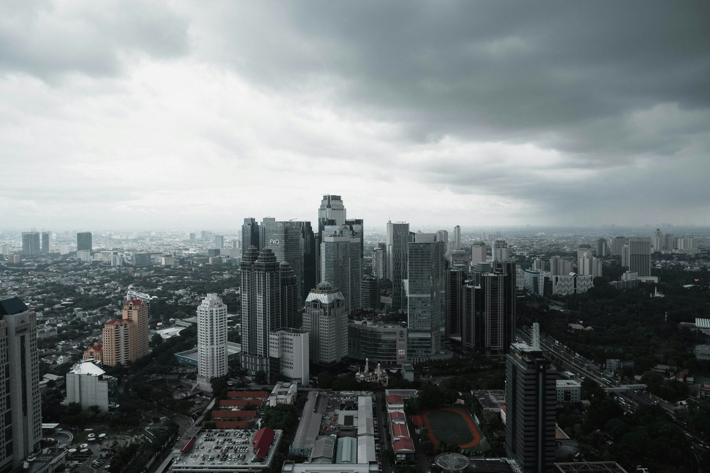
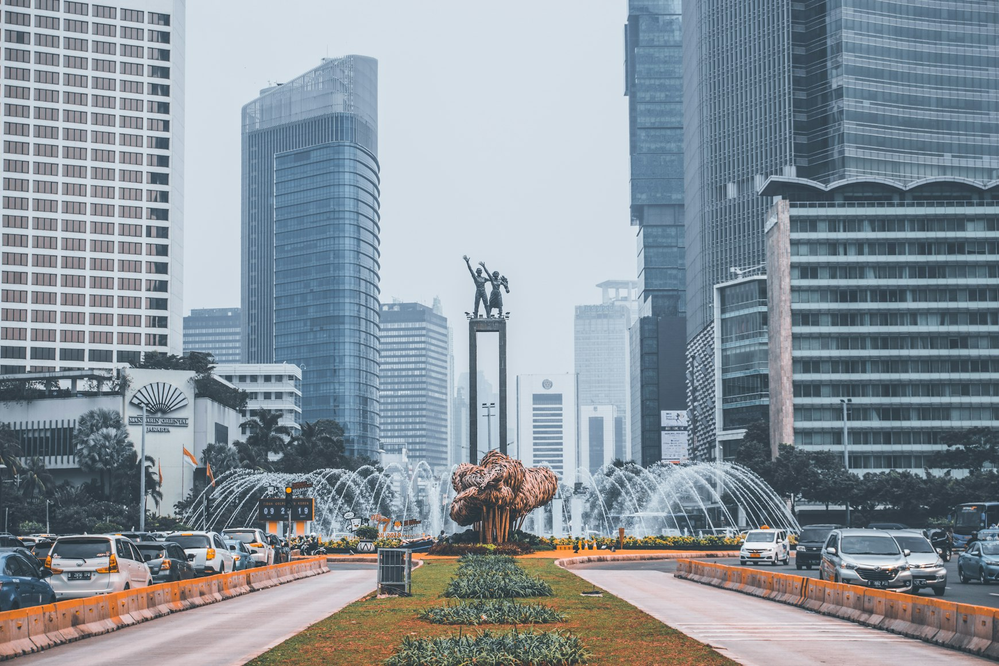
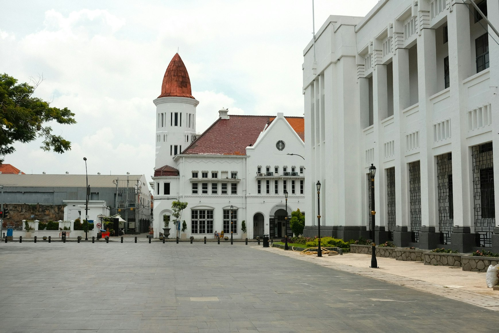
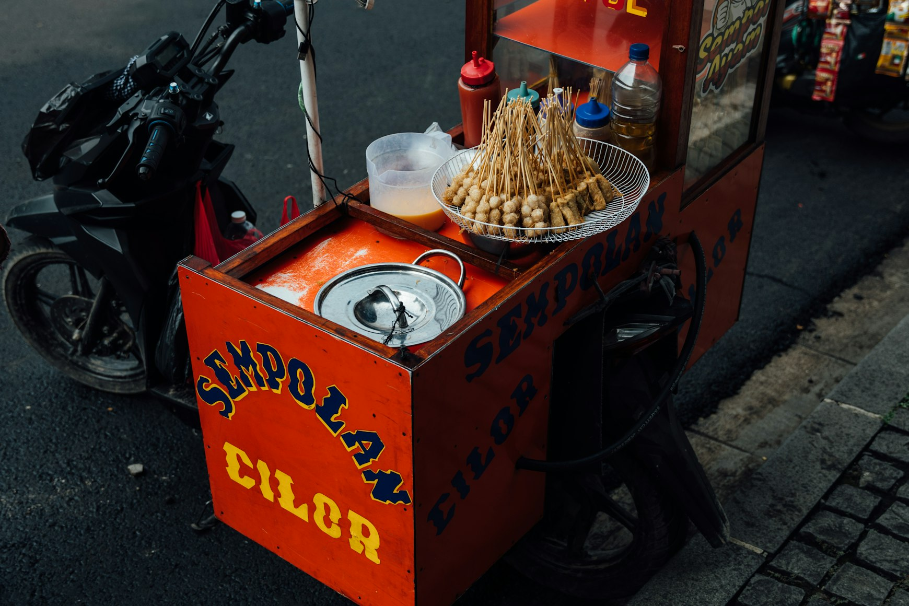
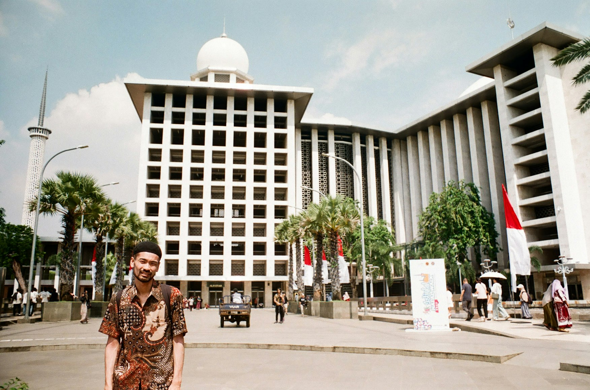
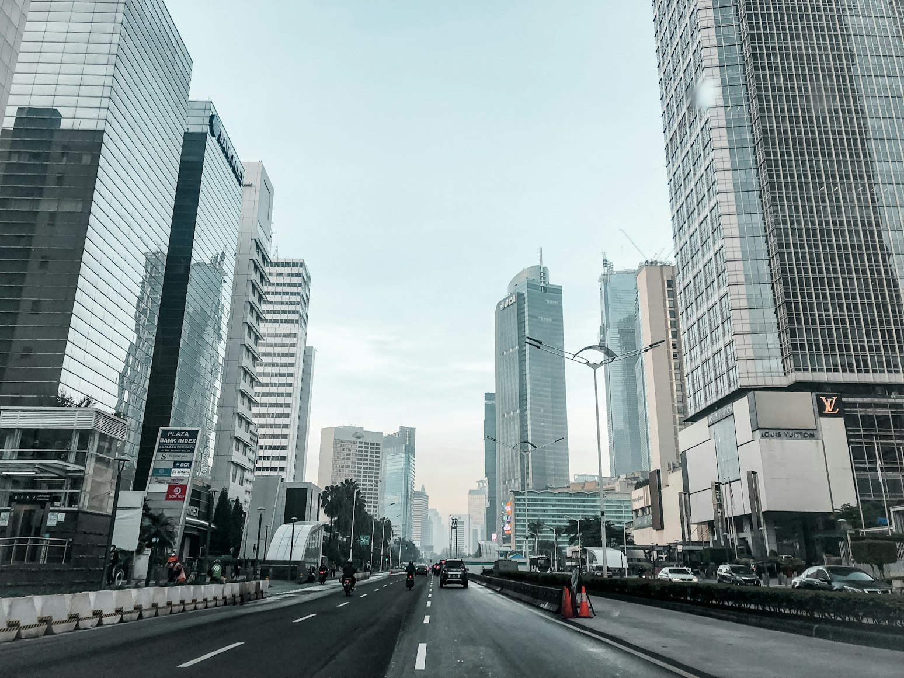
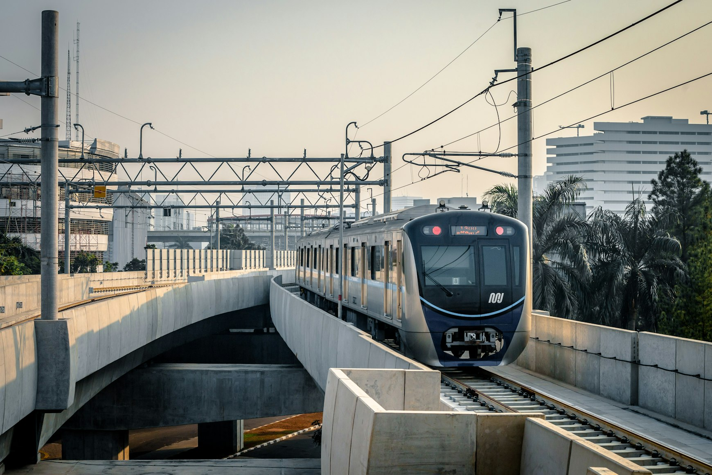
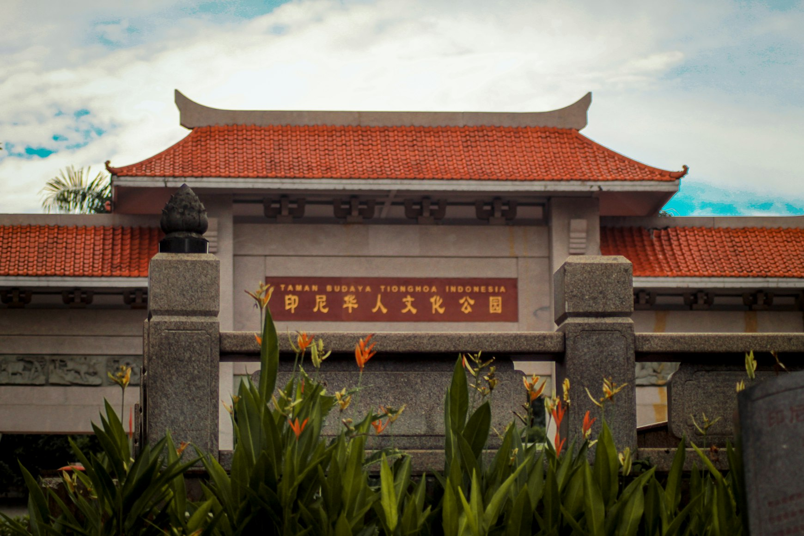
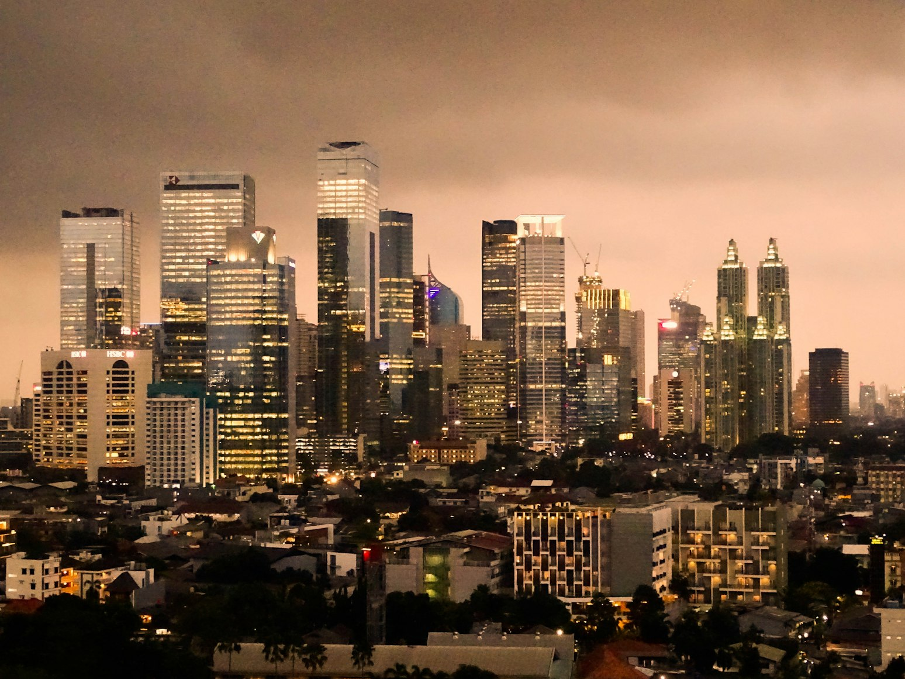

Jakarta is not a city that waits to be understood. It arrives in heat, traffic, glass towers, mosque calls, Dutch façades, Chinese temples, food smoke, polished malls, old harbors, coffee bars, and the restless ambition of a capital still inventing itself every morning.
Many travelers pass through on the way to Bali, Yogyakarta, Komodo, or Raja Ampat, treating Jakarta as a practical inconvenience rather than a destination.
That is the wrong way to enter Indonesia.
Jakarta is Indonesia in compression. It is not the country’s prettiest city, and it never pretends to be. Its power lies somewhere else: in the collision of old Batavia and new finance, colonial memory and national mythology, Chinese-Indonesian food culture and Betawi traditions, South Jakarta’s stylish confidence and the working waterfront of Sunda Kelapa.
It is humid, imperfect, generous, exhausting, and unforgettable when approached with patience.

Late July is one of the more practical times to visit Jakarta because it falls within the drier part of the year. The city is still hot and humid, with daytime temperatures often around 31–32°C, but July is generally far less wet than the peak rainy months.
You should still expect tropical showers and cloudy skies, yet the season allows a more active itinerary than Jakarta’s wetter period from November to April.
This seven-day guide is designed for travelers who want the city in full texture: early starts, strong food, museums during the hottest hours, old neighborhoods before traffic thickens, and evenings that move from street stalls to rooftops without losing the pulse of the city.
Day 1: Monas, Merdeka Square, and the National Museum

Begin Jakarta at its symbolic center. Merdeka Square is wide, formal, and political, a national stage rather than an intimate neighborhood.
At its center rises Monas, the National Monument, one of the city’s defining landmarks and a visual declaration of Indonesian independence.
Come early in late July, before the heat becomes heavy and before traffic begins to shape the day.
Monas gives you scale, but the National Museum gives you context. The museum’s collection covers Indonesian culture from prehistoric objects to art, coins, ceramics, ethnographic material, and historic artifacts, making it one of the best first stops for understanding the archipelago before you move deeper into Jakarta’s neighborhoods.
Spend the afternoon slowly. Jakarta does not reward overloading.
After the museum, have lunch near Menteng or Cikini, then use the late afternoon for coffee, shade, and your first glimpse of central Jakarta’s older residential elegance.
Menteng is one of the best places to soften your arrival: leafy streets, embassies, old villas, quiet cafés, and the feeling of a capital that still remembers a slower rhythm.
End the day with Indonesian food rather than an international hotel dinner. Soto Betawi, nasi Padang, gado-gado, or grilled fish will introduce the city more honestly than anything too polished.
Day 2: Kota Tua, Fatahillah Square, and Sunda Kelapa Harbor

Your second day belongs to old Batavia.
Kota Tua is the historic core of colonial Jakarta, where Dutch-era buildings still frame Fatahillah Square and the city’s past becomes architectural.
Arrive in the morning, when the square is easier to enjoy and the light is kinder on the old façades.
Visit Jakarta History Museum first, then move slowly through the surrounding streets. This district is not only about restored buildings; it is about the tension between memory and daily life.
Bicycles, school groups, cafés, street performers, old shutters, and fading walls all gather in the same frame.
In the late afternoon, continue to Sunda Kelapa Harbor.
This is one of the most atmospheric places in Jakarta: wooden phinisi schooners, port workers, ropes, salt air, and a raw maritime energy that polished waterfronts rarely keep.
It is not luxurious in the conventional sense, but it is visually powerful.
Jakarta was never only a capital; it was a port, and Sunda Kelapa helps you feel that older geography.
Return to Kota Tua or Glodok for dinner. This is the right night for noodles, rice, broth, satay, or Chinese-Indonesian food eaten without ceremony.
Day 3: Glodok, Chinatown, Pasar Baru, and Jakarta’s Food Memory

Glodok is Jakarta at its most layered.
The city’s Chinatown is dense with temples, medicine shops, old eateries, narrow lanes, market smells, red details, fruit stalls, and family businesses that carry generations of Chinese-Indonesian history.
Come hungry and come early.
This is not a neighborhood to rush through. Begin with a temple, then let the morning move through bakmi, kopi, snacks, and small discoveries.
The beauty of Glodok is not curated; it is accumulated.
It lives in shopfronts, steam, tiled floors, handwritten signs, and old recipes that have survived Jakarta’s constant reinvention.
From Glodok, continue to Pasar Baru.
The district has a different rhythm: textiles, shoes, arcades, old commercial buildings, and a sense of Jakarta before the mall became the city’s social living room.
It is an excellent contrast to the capital’s luxury centers because it shows an older, more tactile way of shopping and moving through the city.
In the evening, go to Jalan Sabang or another central food street. Jakarta’s street food is one of its great pleasures, especially after dark, when heat loosens and the city becomes more sociable.
Day 4: Istiqlal Mosque, Jakarta Cathedral, Lapangan Banteng, and Cikini

This day is about Jakarta’s civic and spiritual architecture.
Start with Istiqlal Mosque, one of the largest mosques in Southeast Asia, and Jakarta Cathedral, which stands nearby in one of the city’s most striking visual conversations.
The two buildings are often visited together because they express Jakarta’s religious and national complexity in a single walkable area.
Dress respectfully and give the mosque time.
Istiqlal is not just an attraction; it is a living religious space. Its scale is impressive, but its atmosphere matters more: cool surfaces, open volume, soft movement, prayer, silence, and the city vibrating outside.
Afterward, move toward Lapangan Banteng or Cikini.
This is a good day to let Jakarta breathe between formal landmarks and neighborhood life. Cikini has cafés, cultural spaces, old houses, and a quieter creative mood than the grander areas around Monas.
In late July, keep the afternoon flexible; if rain comes, this is the right moment for a museum, café, bookstore, or long lunch.
Spend the evening in Menteng or Cikini rather than crossing the city again. Jakarta becomes far more enjoyable when your route respects its traffic.
Day 5: South Jakarta — Blok M, Senopati, Kemang, Galleries, Coffee, and Nightlife

South Jakarta shows the city’s contemporary pulse.
This is where Jakarta feels stylish, young, ambitious, and socially fluent.
Blok M has become one of the most interesting areas for food, cafés, bars, Japanese eateries, and evening life, while Senopati and Kemang offer a more polished version of the capital through restaurants, concept spaces, and creative addresses.
Start in Blok M late in the morning. Let the day grow into lunch, coffee, and a slower afternoon.
Then move toward Senopati or Kemang for dinner.
This is the moment to choose one excellent restaurant: modern Indonesian, refined regional cooking, or a confident Jakarta dining room that knows exactly how to handle spice, smoke, texture, and hospitality.

Use MRT where it makes sense.
Jakarta’s MRT is one of the most useful ways to move through parts of central and South Jakarta, while TransJakarta, taxis, and ride-hailing apps fill in the gaps.
Day 6: Taman Mini Indonesia Indah

Taman Mini Indonesia Indah is a full-day shift from city to archipelago.
The park gathers regional houses, cultural displays, museums, and symbolic representations of Indonesia’s immense diversity.
It cannot replace traveling across Sumatra, Java, Kalimantan, Sulawesi, Bali, Papua, and the eastern islands, but it helps explain why Jakarta feels so complex.
This is a useful stop in a seven-day itinerary because it turns Indonesia from an abstract country into a visual map.
You begin to understand that Jakarta is not only a city but a national meeting point, absorbing languages, foods, aesthetics, ambitions, and memories from across the islands.
Go early, especially in late July. Wear light clothing, carry water, and do not try to see every pavilion with equal intensity.
Choose the areas that interest you most and allow the day to be spacious.
Return before evening traffic peaks, then have dinner based on one regional cuisine: Padang, Manado, Javanese, Betawi, or Sulawesi cooking will feel more meaningful after Taman Mini.
Day 7: Ancol, Jalan Surabaya, or a Slow Luxury Finish

Your final day should depend on the Jakarta you want to remember.
For a coastal ending, go north toward Ancol.
It is not a remote tropical beach and should not be compared with Indonesia’s island paradises, but it completes Jakarta’s maritime story.
The city’s relationship with the sea is complicated, shaped by trade, port life, flooding, reclamation, and leisure.
Seeing the coast gives the itinerary a wider frame.
For a more elegant ending, stay central.
Begin with breakfast in Menteng, wander Jalan Surabaya for antiques, old cameras, ceramics, records, lamps, maps, and objects with visible age, then close the afternoon in a museum, gallery, or calm café.
You can also finish in modern Jakarta: Grand Indonesia, Plaza Indonesia, or a rooftop bar.
Malls are not a superficial detail here. In Jakarta, they function as climate refuge, dining hub, meeting point, social stage, and urban infrastructure.
Ignoring them completely means missing part of how the city actually lives.
End with a strong dinner. Jakarta deserves that.
Choose food with identity, not anonymity: elevated Indonesian, excellent Padang, grilled seafood, Betawi classics, or a South Jakarta restaurant with real local confidence.
Practical Late-July Strategy
Late July is one of the better windows for an active Jakarta trip, but the city remains hot, humid, and occasionally wet.
Plan outdoor sightseeing early, use museums and cafés during the hottest hours, and leave evenings for food, rooftops, markets, and neighborhoods.
July sits in the drier season, yet tropical showers are still possible, so a flexible itinerary is wiser than a rigid one.
Build each day around one main area.
Kota Tua and Sunda Kelapa work together. Monas, the National Museum, Istiqlal, and Menteng belong to central Jakarta. Glodok and Pasar Baru make sense as one cultural-food day. South Jakarta needs its own rhythm. Taman Mini requires a separate outing.
Jakarta is not a city to consume quickly.
It is a city to enter through layers: monument, museum, harbor, temple, market, mosque, mall, coffee shop, night street, and dinner table.
After seven days, it will still feel unfinished, but that is precisely why it stays with you.
The city is not a polished postcard.
It is the engine room of Indonesia, and late July gives you enough dry-season space to hear it working.